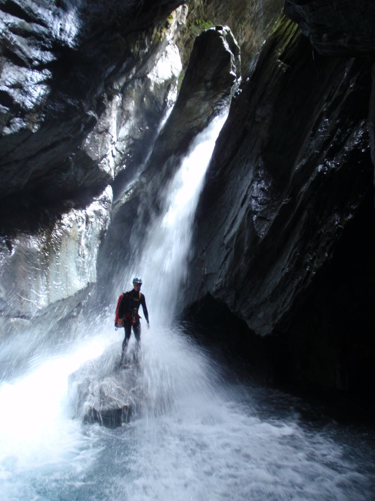

Varied Jump / Slide / Rappel Canyon
資料來源：KiwiCanyons — Mather Creek topo by Daniel Clearwater，2025/03/03 更新；分級定義見 KiwiCanyons Grading。
車停 Pleasant Flat Campground（SH6）。
沿 Haast River 涉行，經 Muir Creek 到 Mather Creek。
先上溯約 10 min 到 The Arch 觀察水量。
回溯約 100 m，清洗鞋子或更換備用鞋。
上切至 terrace，沿橘色 PVC 標記的 ridge approach 前進。
抵達入溪點後開始 Upper section。

剖面圖可左右捲動；縱向為落差比例，橫向不等比。
官方 topo PDF（2025/03）縱剖面依官方 topo 的落差與順序簡化重繪，逃生點與細部地形請見原圖。原始 topo：KiwiCanyons — Mather Creek topo by Daniel Clearwater，2025/03/03 更新。
資料來源：KiwiCanyons — Cross Creek topo by Daniel Clearwater；分級定義見 KiwiCanyons Grading。
這條路線還沒有接上測站。目前只有 Mather Creek 建了示範用的水位與雨量圖，等測站來源確定後會一併補上。
停在 Cross Creek 橋 Westland 側的路肩。
從橋邊沿公路往 Haast Pass 方向走回約 10 m，找到明顯的步道起點。
進場全程穿越脆弱的苔蘚林，務必全程走在步道上。
距路 10 分鐘可下切下段，從步道就看得到溪流，會抵達 Gangers Creek 匯流附近。
距路 20 分鐘有岔路，往下往右接中段起點。
續行步道約 30 分鐘抵達上段起點。
剖面圖可左右捲動；縱向為落差比例，橫向不等比。
官方 topo PDF（2022）縱剖面依官方 topo 的落差與順序簡化重繪，逃生點與細部地形請見原圖。原始 topo：KiwiCanyons — Cross Creek topo by Daniel Clearwater。
資料來源：KiwiCanyons — Wilson Creek topo by Daniel Clearwater；分級定義見 KiwiCanyons Grading。
這條路線對流量極度敏感（1 cumec 正常、1.5 就升級），最需要即時水情，但目前還沒有接上測站。等測站來源確定後會優先補上這一條。
從 Haast Pass 頂點往北開約 2.8 km，停在 Wilson's Creek 橋的南側。
從 Didymo 警告牌走上坡道，接舊木橋過溪。
橋北側有淡淡的路跡，往北數公尺後左急轉穿過密灌叢。
灌叢之後森林開闊，地衣與泥炭苔非常脆弱，盡量沿著路跡走。
沿稜線上行約 1 小時，到 820 m 等高線附近向西橫切。
關鍵是找到地圖上沒標示的小溪正確渡溪點，於 800 m 等高線過溪。
小心下切非常陡的稜線約 15 分鐘，在一棵大樹處急右轉、從小崖下方橫過，再往南幾分鐘抵達溪谷。過了這個轉彎稜線會變成斷崖。
再往下游走 5 分鐘，峽谷會突然開始。
剖面圖可左右捲動；縱向為落差比例，橫向不等比。
官方 topo PDF縱剖面依官方 topo 的落差與順序簡化重繪，逃生點與細部地形請見原圖。原始 topo：KiwiCanyons — Wilson Creek topo by Daniel Clearwater，2015/02/09 修訂。
資料來源：KiwiCanyons — Whio Creek Canyon topo by Will Hamilton；分級定義見 KiwiCanyons Grading。
Fiordland 雨量極大且變化快，這條又標明 Low to normal flows 才適合下，最需要即時水情，但目前還沒有接上測站。
停在 Tutoko Bridge。
沿 Tutoko valley track 上行，走到谷地平原處渡河，約 2 小時。
上溯 Whio Creek（Leader Creek 南邊那一條）約 15 分鐘，抵達峽谷底部。
沿真右岸的苔蘚岩板 scramble 上行，直到大瀑布底部。
上行途中可以看到大部分落差，順便確認 bolt 是否還在。
官方 topo PDF 第 3 頁有 5 張 Whio Creek 實拍照（攝影：Will Hamilton）。因為本專案是公開 repo，這裡不轉載，請直接看原始 PDF。
官方 topo PDF（含照片）剖面圖可左右捲動；縱向為落差比例，橫向不等比。
官方 topo PDF縱剖面依官方 topo 的落差與順序簡化重繪。原始 topo 為手繪且所有落水潭同色，未區分深淺，因此這裡一律標為未區分。原始 topo：KiwiCanyons — Whio Creek Canyon topo by Will Hamilton，2024/01。
資料來源：KiwiCanyons — Guide to the Waitaha Valley Canyons，2025/02/11；分級定義見 KiwiCanyons Grading。
這條的 Flash flood danger 是 High risk，判斷水位很關鍵。官方指南提供了流量計岩石在 medium 與 high flow 下的對照照片，可以在現場目視比對。
官方指南（含流量計對照照片）從 Hokitika 往南，在跨越 Waitaha River 之前左轉進 Waitaha Rd。
沿 Waitaha Rd 走右岸 11 km 經過數個農場，路底是與 Anderson Rd 的 T 字路口，右轉後接往西的泥土路，停在路底的 DOC 標示處。
沿 DOC 步道走 3–4 小時到 Kiwi Flat Hut。注意部分地形圖標的是舊版步道；正確路線會在右岸一條小支流處上切，再繞到崖壁上方。
從小屋沿 Whirling Water 上溯，到與 Bartrum Creek 的匯流處。
上溯 Bartrum Creek，直到最後一個瀑布，該處有流量計岩石。
在左岸的岩板離開溪流，沿稜線上行。
抵達一個高點，需橫渡一條小溝。
繼續沿稜上行到稜線頂點，再陡下切進 Bartrum Creek。
Waitaha Valley 的官方指南（31 頁）只有路線敘述、谷地地圖與流量計照片，沒有繪製縱剖面，所以這裡沒有可重繪的落差序列。有剖面圖釋出後再補。
官方指南 PDF（2025/02/11）資料來源：KiwiCanyons — Major Mayhem topo by Joe Bugden（圖幅 CA10 Lake Williamson）；分級定義見 KiwiCanyons Grading。
官方在 460 m 等高線的溪床設了水位檢查點並附對照照片；上行途中經過時就該比對，水位有疑慮就不要進去。下段是持續性窄縫，高水位時危險潛勢很高。
官方 topo PDF（含水位對照照片）從 Glenorchy 出發約 25 分鐘，Paradise 之後路面轉為礫石並要過數個涉水點；正常天候下 2WD 可通行。
開到 Dart Valley 路末端倒數第二個涉水點（Dan's Paddock 之後），停在涉水點對側泥土路右邊，停車位有限。
Dart Valley 路末端（再過 10 分鐘）有 DOC 廁所。
從停車處沿溪的左岸（面向上游）上行，盡量靠近溪流。
水位有疑慮時，在 460 m 等高線的溪床停下來與官方對照照片比對。
續行至一條支流，於 1000 m 等高線由北岸過到南岸；這條支流在該點上下都變得很陡。
繼續上行穿過樹線，進入草叢（tussock）地形直到 1400 m 等高線，即為峽谷起點。
從停車處沿溪的右岸（面向上游）上行，同樣在 460 m 比對水位。
穿越無路徑的原始林地爬升到想要的高度。
800 m 入口：由碎石坡下切至 760 m 的溪床。
600 m 入口：沿 600 m 等高線走到「The Happy Place」上方的平台再下切，這條比較輕鬆。
這條的官方 topo 自帶圖例，錨點用紅 ✗（單顆）／✗✗（雙顆）／綠 ✗（手拉繩）／紫 ✗（偏移），並以 CL／C／CR 標示左岸／中央／右岸。剖面圖可左右捲動；縱向為落差比例，橫向不等比。
官方 topo PDF（6 頁）縱剖面依官方 topo 的落差與順序簡化重繪，逃生點與地形細節請見原圖。原始 topo：KiwiCanyons — Major Mayhem topo by Joe Bugden，2018/05。